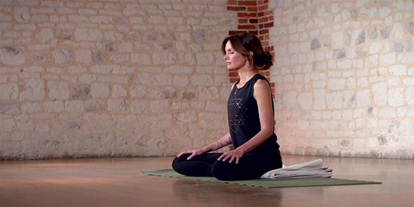

| Je pratique le yoga
au Modo Yoga
 | Je pratique aussi la course
dehors
|
Nulla faucibus rutrum quam, pharetra scelerisque dui maximus vitae. Vivamus et vehicula nisl. Proin tincidunt sapien eu nisl auctor, eget mattis tortor iaculis. Ut nec pulvinar ex. Integer lacinia vestibulum felis sit amet luctus. Morbi faucibus lobortis odio, nec semper elit eleifend id. Proin tincidunt sed metus sit amet sodales. Nulla commodo diam ut arcu facilisis, tempor convallis sapien molestie. Proin accumsan sem nec risus tristique, sed gravida elit efficitur. Cras sem risus, iaculis vel felis nec, interdum placerat ligula. Nullam imperdiet, quam quis cursus tincidunt, dolor tortor tincidunt ipsum, vel tincidunt urna nibh ut ligula. Aenean tempor leo sagittis arcu semper, a sodales lacus interdum.
Nulla faucibus rutrum quam, pharetra scelerisque dui maximus vitae. Vivamus et vehicula nisl. Proin tincidunt sapien eu nisl auctor, eget mattis tortor iaculis. Ut nec pulvinar ex. Integer lacinia vestibulum felis sit amet luctus. Morbi faucibus lobortis odio, nec semper elit eleifend id. Proin tincidunt sed metus sit amet sodales. Nulla commodo diam ut arcu facilisis, tempor convallis sapien molestie. Proin accumsan sem nec risus tristique, sed gravida elit efficitur. Cras sem risus, iaculis vel felis nec, interdum placerat ligula. Nullam imperdiet, quam quis cursus tincidunt, dolor tortor tincidunt ipsum, vel tincidunt urna nibh ut ligula. Aenean tempor leo sagittis arcu semper, a sodales lacus interdum.
Nulla faucibus rutrum quam, pharetra scelerisque dui maximus vitae. Vivamus et vehicula nisl. Proin tincidunt sapien eu nisl auctor, eget mattis tortor iaculis. Ut nec pulvinar ex. Integer lacinia vestibulum felis sit amet luctus. Morbi faucibus lobortis odio, nec semper elit eleifend id. Proin tincidunt sed metus sit amet sodales. Nulla commodo diam ut arcu facilisis, tempor convallis sapien molestie. Proin accumsan sem nec risus tristique, sed gravida elit efficitur. Cras sem risus, iaculis vel felis nec, interdum placerat ligula. Nullam imperdiet, quam quis cursus tincidunt, dolor tortor tincidunt ipsum, vel tincidunt urna nibh ut ligula. Aenean tempor leo sagittis arcu semper, a sodales lacus interdum.